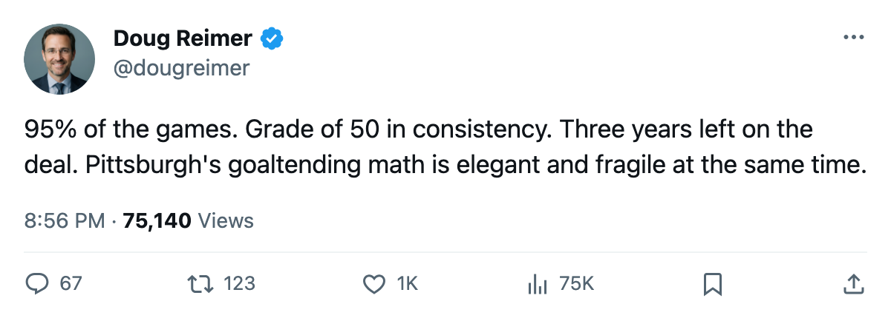
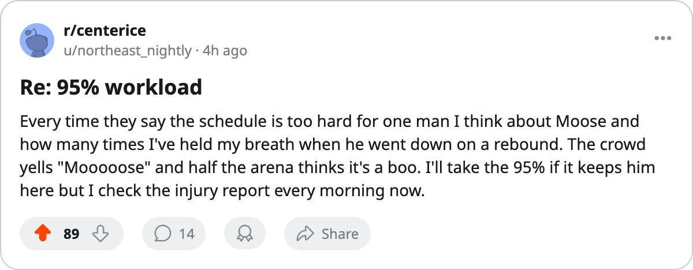

ENDU 93, CONS 50: Pittsburgh Runs 95% of Its Season on a Man the Book Says Can't Repeat Itself
Hedberg's workload share is the highest in hockey. His consistency grade is the floor. The contract says three more years.
 Doug ReimerAnalytics editor, ex-video coach · The Slot Report
Doug ReimerAnalytics editor, ex-video coach · The Slot Report Johan Hedberg87 has started 40 of
Johan Hedberg87 has started 40 of  Pittsburgh Penguins's 42 games. At 95%, he carries the highest workload share of any goaltender in this league, clear of the next group by a full game's worth of starts.
Pittsburgh Penguins's 42 games. At 95%, he carries the highest workload share of any goaltender in this league, clear of the next group by a full game's worth of starts.
The method: I ranked every starting goaltender by the share of his club's games played. The top of that list reads like an injury-risk board. Hedberg sits alone at the top, and the Book gives him a 50 in consistency, the lowest grade on his card.
| Goaltender | Club | GP | Team GP | Share |
|---|---|---|---|---|
| Johan Hedberg | PIT | 40 | 42 | 95% |
 Rick DiPietro90 Rick DiPietro90 | NYI | 36 | 41 | 88% |
 Nikolai Khabibulin91 Nikolai Khabibulin91 | TB | 37 | 42 | 88% |
 Roman Cechmanek92 Roman Cechmanek92 | LA | 37 | 42 | 88% |
 Martin Brodeur93 Martin Brodeur93 | NJ | 34 | 40 | 85% |
 Patrick Lalime90 Patrick Lalime90 | OTT | 35 | 42 | 83% |
 Byron Dafoe81 Byron Dafoe81 | ATL | 34 | 41 | 83% |
 Roman Turek83 Roman Turek83 | CGY | 34 | 42 | 81% |
 Dan Cloutier90 Dan Cloutier90 | VAN | 34 | 42 | 81% |
 Jose Theodore89 Jose Theodore89 | MTL | 34 | 42 | 81% |
Hedberg's endurance grade is 93, which explains how a 32-year-old logs 95% without breaking down yet. His consistency grade is 50. The Book says he does not perform the same way twice. Pittsburgh asks him to be the same man every night.
The backstop is Sebastien Caron81, graded 76 in the Book. Caron has dressed for 4 games. He carries 10% of the workload and a 10-point gap between his grade and Hedberg's. If Hedberg's body gives (the record has 6 injury spells against him from last season), Pittsburgh's goaltending drops a full tier.
The system works right now
Pittsburgh sits 4th in the East with 54 points on a $48.92M payroll. That works out to $0.91M per point, the best cost-per-point figure in the league. The club's morale averages 95.9, 5th-highest in the league. Thirty-five injury spells have cost 206 days across the roster. Hedberg himself has logged zero this season.
The formula is visible: pay the least, ask the starter for everything, don't dress the backup. It produces results this year. It produces no insurance policy.
Three years, $5.65M, age 32
Hedberg's contract pays $5.65M per year with 3 seasons remaining. He turns 33 in May. His base grade in the Book is 85; his current overall reads 86, which puts him above his base on the Development Index. His strongest attributes are endurance (93), passing (91), glove (90), and lateral movement (90). His potential grade is 81, which means the Book expects him to fall from here.
The contract locks three years at $5.65M for a goaltender the Book grades at 50 in consistency. At 33, with a 95% workload share, Hedberg can play. The question is whether the system can survive a 2-week spell on the shelf.
What 95% costs
The 6 injuries in his record from last season were brief: the longest spanned 6 days. None carried a named body part in the ledger. This season, he has not appeared on the injury list. That is the only thing keeping the formula intact.
Compare Hedberg's situation to the other goalies above 85%. Brodeur at NJ carries a 95-overall, and his club has dealt with only 21 injury spells all season. DiPietro at NYI is 24 and the Islanders have surrendered 39 spells and 352 days to injury, the worst in hockey. Cechmanek at LA has faced 30 spells across 256 days around him.
Hedberg's 35 spells and 206 days are spread across the rest of the roster. The goaltender himself has absorbed nothing. That is either durability (ENDU 93) or a body that has not been hit yet. The Book's consistency grade of 50 says to expect the second.
Pittsburgh's front office has $48.92M committed across the roster. Hedberg's $5.65M is the line the whole structure stands on. The system depends on one man whose weakest quality is the one the schedule demands every other night. Forty games remain on the schedule and three more seasons on the contract. The formula has not yet been tested over a full 82.

